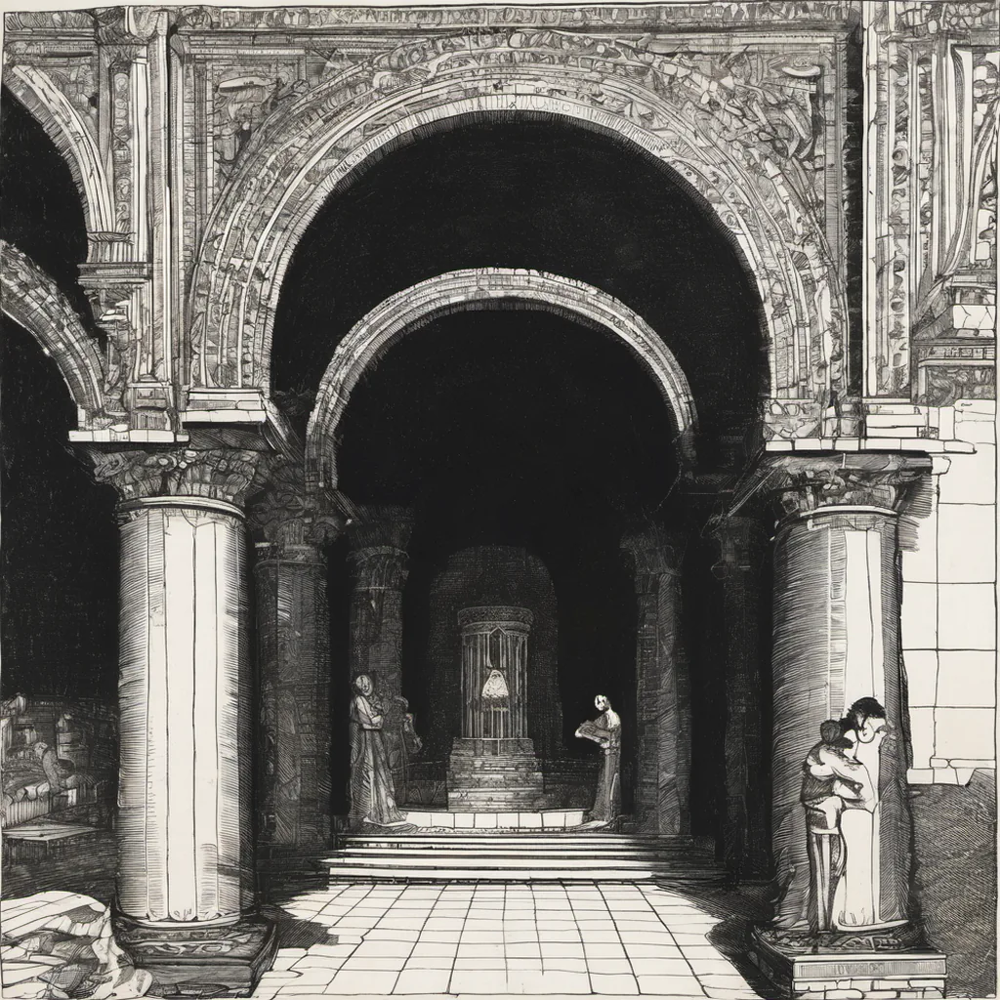

Memory Storage of a Modern System ·
a bell choir tuning, quantum tunnelling
a bell choir tuning x quantum tunnelling
Cold brass cups ring out the A-major chord, Then stop dead where the open E should be, Silence hangs until the pitch is heard, Not by the lips of metal, but by three. The tuner hums a low and heavy note, A vibration that refuses to pass through, Until one lip finds the gap too small, And slips beneath the barrier's view. We call it luck when notes resolve alone, But physics knows the path they take was never blocked, A probability wave crossing the thin, Letting sound leak out where silence took its stand. The bell does not wait for a crack to form, It finds the way through air that seems too dense, Until the vibration makes the air itself Bend round the rim and let the tone descend.
How this piece was made
- 01Poem written byQwen3.5 9B recorded
Local model on one RTX 3070 Ti. It also critiques its own drafts and rewrites up to five times.
- 02Image prompt written byQwen3 8B from pipeline history
Local model. It reads the poem and writes the picture brief.
- 03Image rendered byStable Diffusion XL 1.0 from pipeline history
Local diffusion model on the same GPU. Several candidates per poem.
- 04Image chosen byClaude Opus from pipeline history
Claude, running as the corporation's blind art-critic. It scores every candidate and never writes a prompt.
- Poem drafts
- 5 of 5
- Poem self-score
- 5/10
- Image candidates
- 4
- Judge’s score
- 4/10
- Selection
- Highest-scoring on-subject candidate (did not clear the judge’s bar outright)